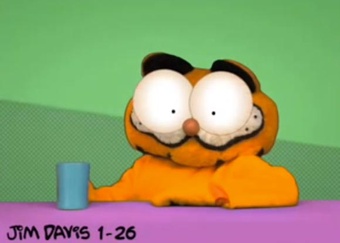

A Fine Cup of Coffee

Description
What can I say, Jon? Without the coffee, I cannot feel anything. My body feels like a raft at sea, aimlessly pushed about by the wind and waves. But then, like a sun cresting the horizon at dawn, coffee brings light to my sunken, hollow existence. What should be an unknowable rapture takes me to places that I could never imagine. Oh, Jon... if only you knew the feeling coffee brings.
There's no such thing as a bad cup of coffee, but some are surely better than others. Pay close attention to the ratio of coffee to water, grind size, and consistency of actions while preparing.
Ingredients
- Filtered Water
- High Quality Coffee of Your Choosing (Preferably Single Origin)
- A Coffee Grinder
- A Scale
- A Timer
- The Brew Method of Your Choosing (I Recommend V60)
- Optional: A Gooseneck Kettle
Directions
- Set your water to boil on the stove in your kettle. Gooseneck is preferred for consistency and accuracy, among other things.
- Think about your life choices while assembling your coffee gear.
- Weigh the desired quantity of coffee on your scale, then grind it at the desired setting. Keep a log of your changes and cups to see what works best.
- Set up your brewer. If it has a paper filter, make sure to wet it first, preferably with warm/hot water.
- Think about touching the hot stove in case it makes you feel anything, before adding your coffee to the brewer.
- Once the water is boiling, start your timer, then being pouring the water into the brewer. Make sure to be precise and consistent with the flow of the water.
- As the coffee finishes, either make note of the time or stop the timer.
- Although it would be nice to enjoy the coffee, you don't. Your ungodly abomination of a cat drinks it before you can have any of it.